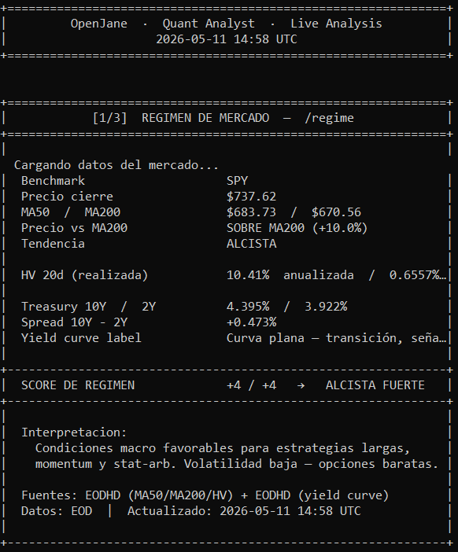
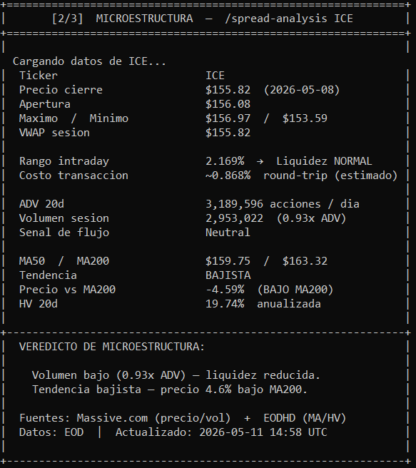
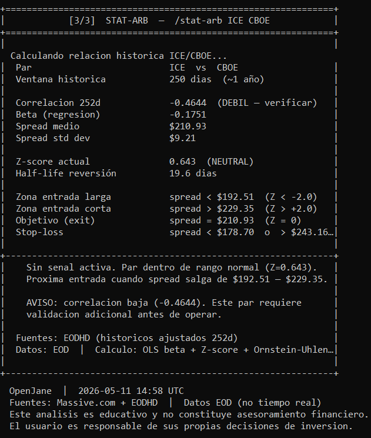

Jane Street genera $39B anuales sin predecir el futuro. Lo hace optimizando fricción, liquidez y régimen. OpenJane traduce esa lógica al alcance de cualquier persona — en español, inglés o portugués.
Los tres bloques de análisis corriendo localmente con datos de Massive.com y EODHD. Esto es exactamente lo que ves cuando ejecutas python scripts/jane_demo.py

SPY sobre MA200 (+10%), yield curve +0.47%, HV 10.4%. Score +4/+4 → ALCISTA FUERTE.

ICE $155.82, ADV 3.2M acciones, HV 19.7%. Tendencia BAJISTA — precio 4.6% bajo MA200.

Par ICE/CBOE: Z-score 0.64 (neutral), half-life 19.6 días. Zonas de entrada calculadas con OLS + Ornstein-Uhlenbeck.
Clic en cualquier imagen para verla en tamaño completo. · Datos EOD de Massive.com + EODHD · Obtén tus API keys gratis →
Datos EOD de Massive.com y EODHD — ambos gratuitos sin tarjeta de crédito. Cada badge indica si el dato es accesible en free tier o requiere plan de pago.
Jane aplica automáticamente el análisis correcto según tu pregunta. Sin código. Sin formularios. Solo lenguaje natural.
Si siempre volviste a buscar el mismo término, este glosario es para ti. Cada concepto incluye definición, cómo se mide y un ejemplo real.
Sin sorpresas. Cada dato en OpenJane tiene una fuente verificable y un badge que indica si requiere pago.
Datos de precios y volumen proporcionados por Massive.com. Datos fundamentales, históricos y macroeconómicos proporcionados por EODHD.
Análisis generado por Claude (Anthropic) usando los frameworks conceptuales documentados en este repositorio.
Toda la información es proporcionada exclusivamente con fines educativos e informativos y no está destinada a fines de trading ni como asesoramiento financiero, de inversión, fiscal, legal, contable u otro tipo de asesoramiento.
OpenJane no predice precios futuros ni recomienda comprar o vender ningún activo.
Los datos tienen retraso de al menos 24 horas en el free tier. El usuario es responsable de sus propias decisiones de inversión.